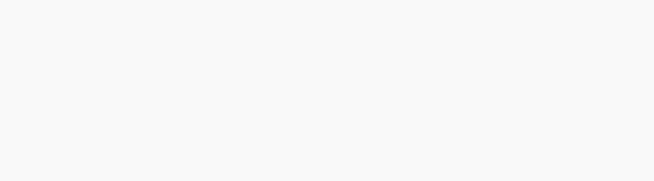
Causal 页面底色
#f9f9f9
来自 Causal 全站
「背景色我其实很喜欢」
孙涛挑过、觉得好看的设计。点图可放大；「心动设计」只记你点名说过的。
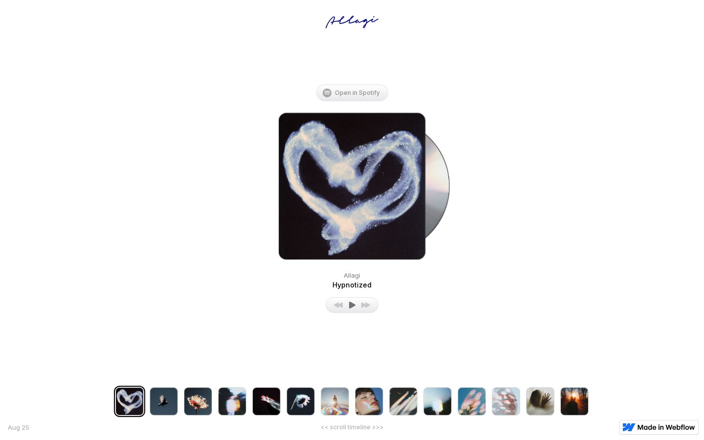
大片纯白留白，只放一张唱片封面作唯一视觉焦点，封面右侧露出半张 CD；手写蓝色字标；上下是 Open in Spotify 小胶囊和播放控制胶囊。
可借鉴底部缩略图时间轨道切换作品，一屏只讲一件作品，适合作品墙/号刊浏览。
https://allagi.music/（发现于 minimal.gallery）
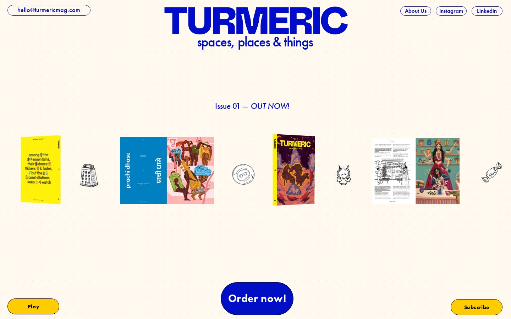
奶油点阵纸感底；居中粗蓝无衬线标题；中间横滑号刊内页预览；页缝夹黑白手绘小物件；底栏黄/蓝胶囊 Play、Order、Subscribe。
可借鉴把「新一期内容」做成可横滑的实体感预览，订阅/购买嵌进杂志封面感底栏，而不是传统列表+表单。
https://www.turmericmag.com/
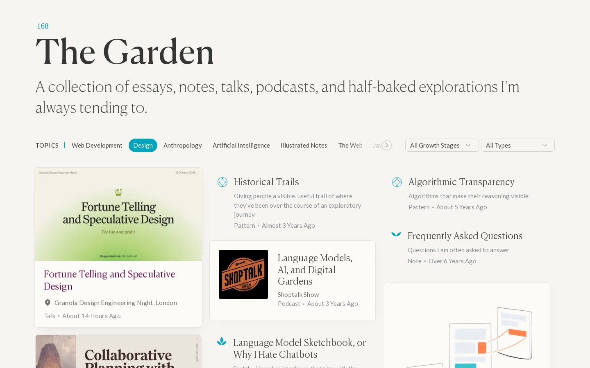
暖纸白底、衬线大标题，三列错落混排，不是等高的同质卡片。
可借鉴主题胶囊 × 成长阶段下拉 × 内容类型下拉，三维筛选；混合内容按类型给不同卡面。
https://maggieappleton.com/garden
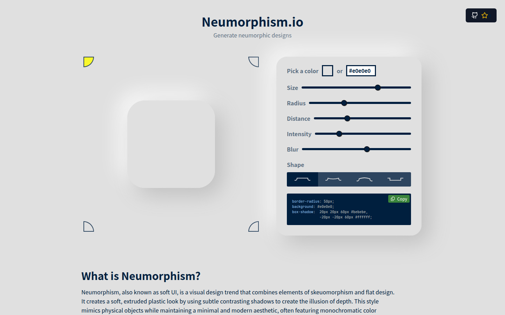
浅灰同色底与控件；挤出双阴影圆角预览；右侧 Soft 控制面板与阴影 token 可调
可借鉴Soft UI 双阴影与同色挤出控件
今日审美推送 #09 · neumorphism.io
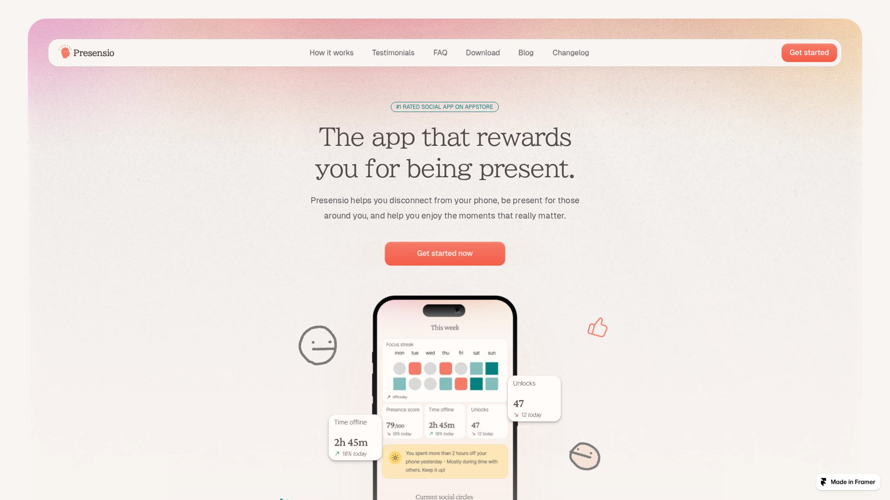
外层奶油纸感底，框内粉橙柔渐变大圆角；顶部悬浮白胶囊导航；居中深色衬线标题与浅灰副文；珊瑚胶囊按钮；下方黑边手机与白色浮卡，两侧手绘小表情
可借鉴奶油纸感外底托住内层柔渐变圆角大框；悬浮胶囊导航压在渐变上；居中衬线标题配单颗胶囊按钮；手机与浮卡并置，手绘小表情轻点缀
今日第四批 #45 · presensio.framer.website
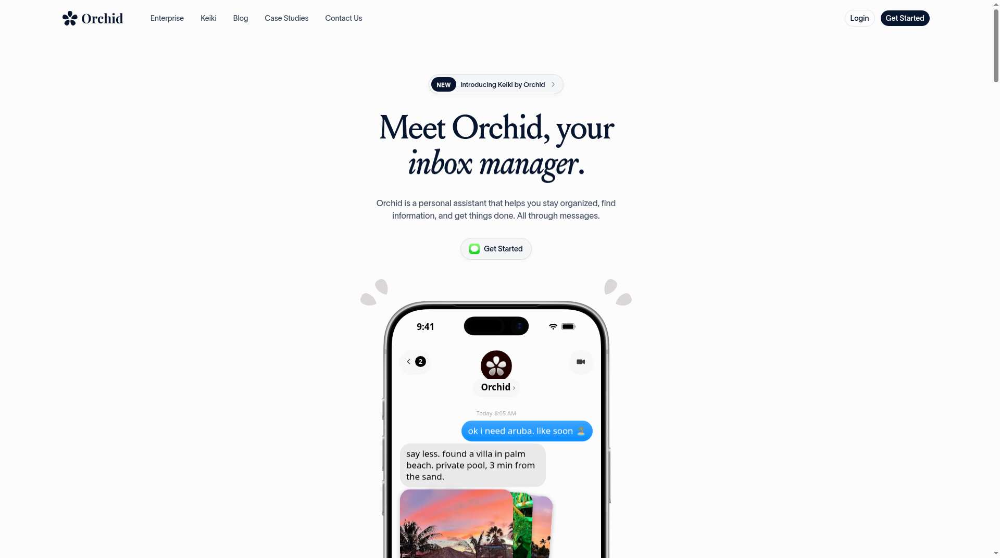
白底大留白，顶部小导航；居中深墨衬线大标题与浅灰副文；浅薄荷绿胶囊 CTA；手机聊天窗口从底部探出，黑边圆角手机，少量星芒点缀
可借鉴白底大留白居中衬线首屏；薄荷绿胶囊 CTA；产品手机聊天窗自底部探出
今日第三批 #30 · Orchid 官网
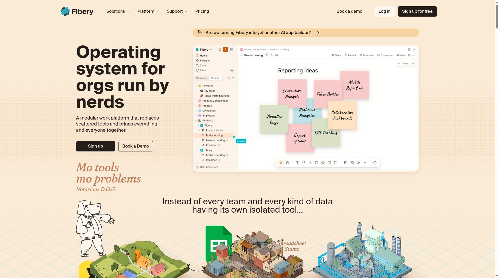
浅桃米色底、黑粗标题与棕橙衬线点缀、线稿狗与等距小岛插画、圆角产品窗
可借鉴浅桃米色整页底；黑粗无衬线标题 + 棕橙衬线俏皮点缀；线稿人物 + 等距小岛插画与圆角产品窗并置
今日第二批 #19 · Fibery 官网
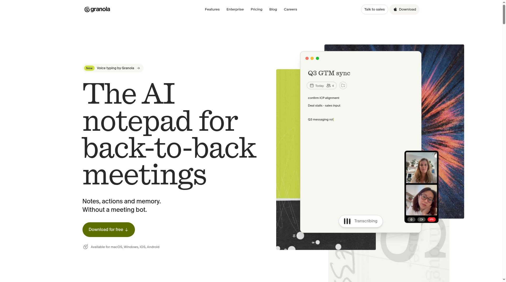
白底大衬线标题，右侧主笔记产品窗 + 右下手机界面层叠，另有小面积纹理背景
可借鉴左文右叠层产品视觉；主笔记窗与手机通话窗前后层叠；纹理块作小面积背景点缀
今日第二批 #22 · Granola 官网
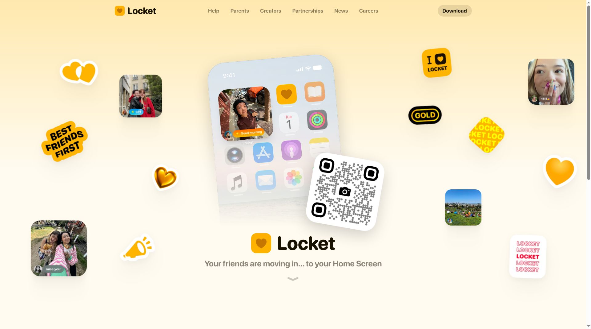
用户喜欢整站气质：奶油到蜜黄浅渐变底、大留白；白/黄圆角贴纸与少量人像小卡散落并带软阴影；中心手机组件与白色二维码，底部大黑字标题与浅灰副文案
可借鉴蜜黄浅渐变留白首屏；中心产品手机窗 + 悬浮白圆角二维码；贴纸/小卡软阴影散落作轻点缀
今日第二批 #11 · Locket 官网
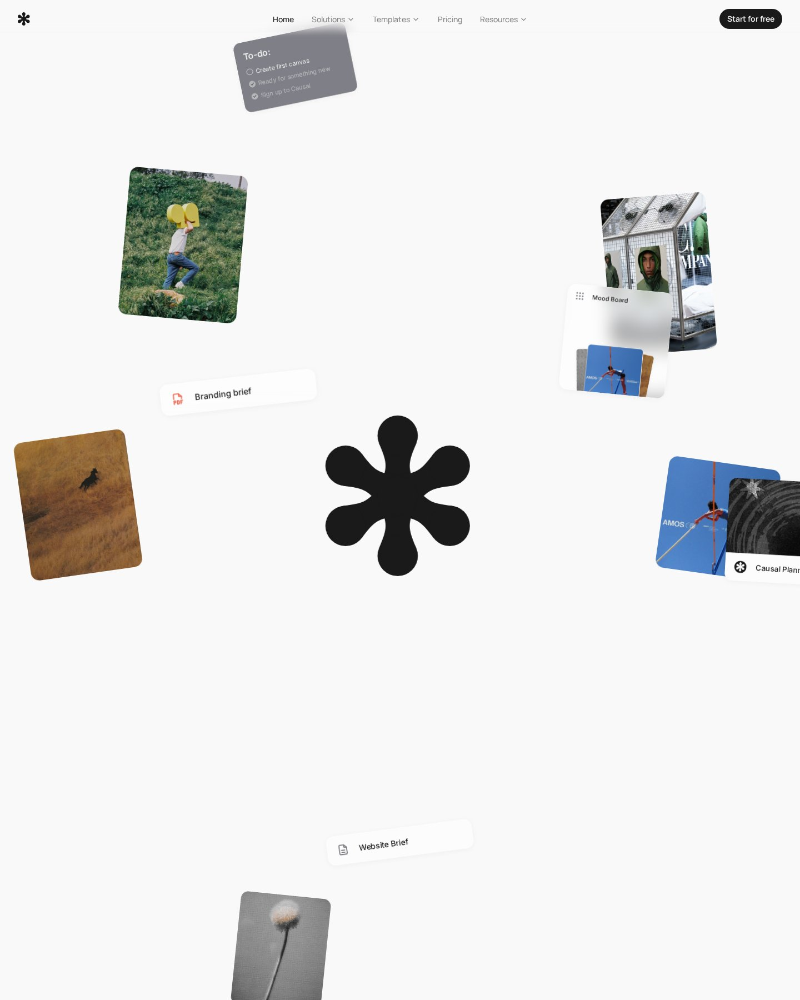
用户喜欢：纯白底上，各种形状（倾斜图片卡、PDF条、待办卡、Mood board）散落铺开的拼贴效果
可借鉴大留白白底 + 多形状素材轻微旋转/投影叠放；彩色只来自素材内容本身
Causal 首页往下第4段 · causal.so
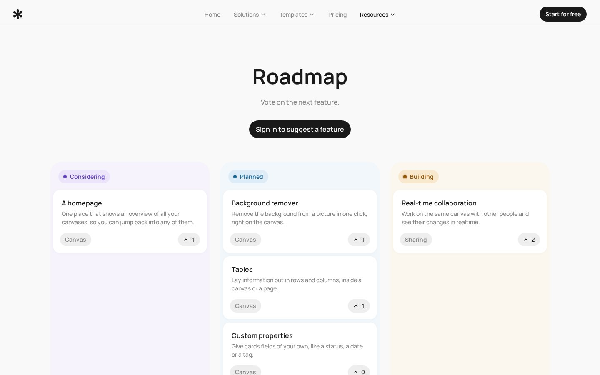
用户喜欢：三列长条形状态头（Considering / Planned / Building）的形状，以及对应的淡紫、淡蓝、琥珀黄
可借鉴看板列头用 soft + pill 语义色，不是强饱和；卡片仍落在灰阶系统里
Causal 全站拆解 · causal.so/roadmap
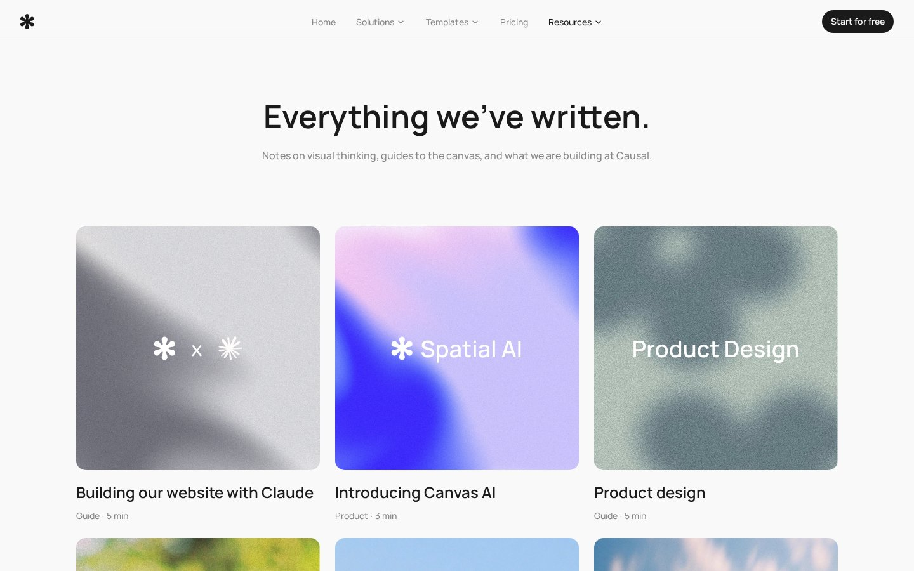
用户喜欢：圆角矩形博客卡片网格；每张卡是大幅模糊渐变封面 + 居中白字标题；页面底色近白非白
可借鉴短 Hero + 圆角矩形卡片网格；封面用颗粒渐变而非摄影；卡下信息用 Caption · 分类 · 时长
Causal 全站拆解 · causal.so/blog
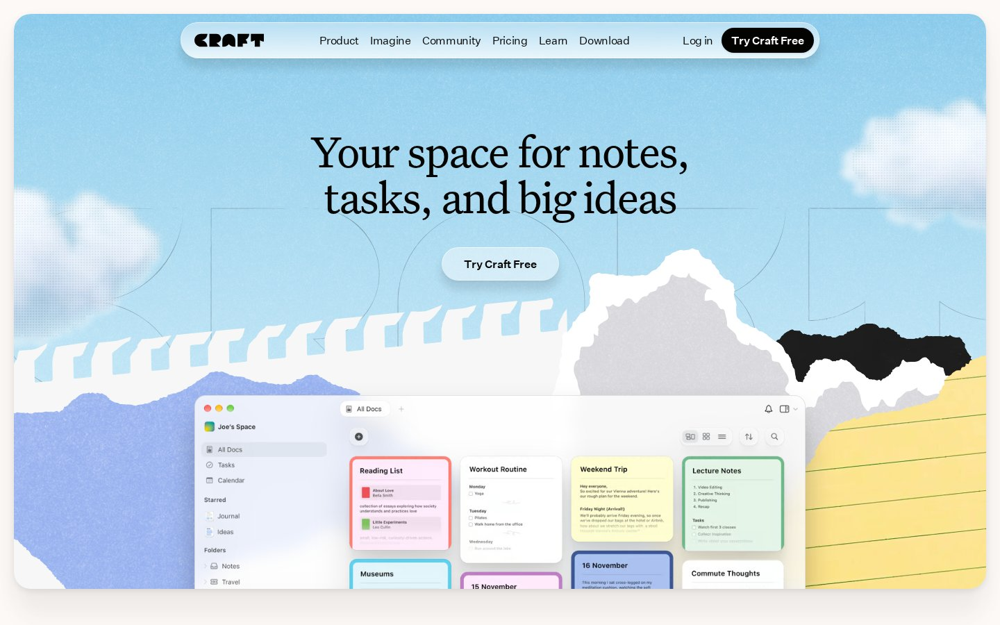
天空云朵背景 + 柔和阴影卡片层叠，奶油蓝调 Soft UI
可借鉴层叠软卡片 + 柔阴影；衬线大标题配单颗深色胶囊
质感加推 11-05 #09 · craft.do 官网直截
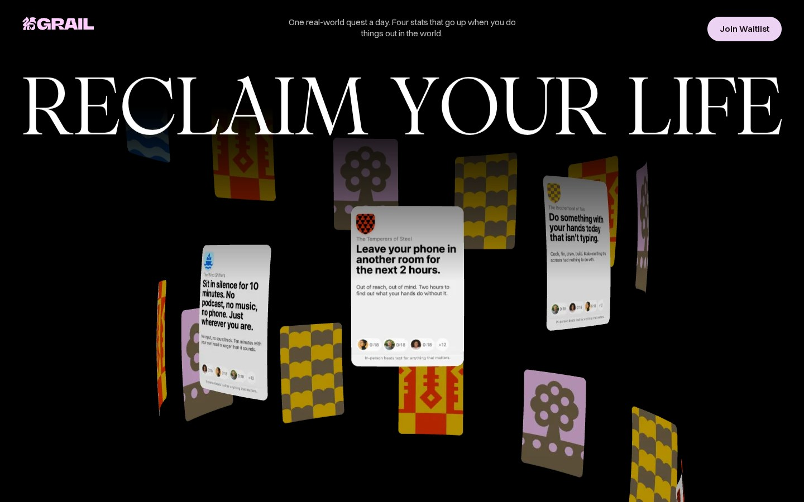
黑底配衬线大标题和粉色胶囊按钮；App 卡片在空中漂浮散落
可借鉴滚动带动 3D 场景 + matter.js 物理漂浮卡片；单颗粉胶囊 CTA
每日审美推送 11-05 #03 · Awwwards
只展示真实色块，不附界面截图。

来自 Causal 全站
「背景色我其实很喜欢」
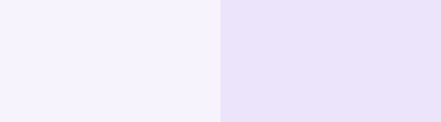
来自 Causal Roadmap Considering
「紫色、蓝色、黄色的那个长条形……对应的颜色」
来自 Planned
同上
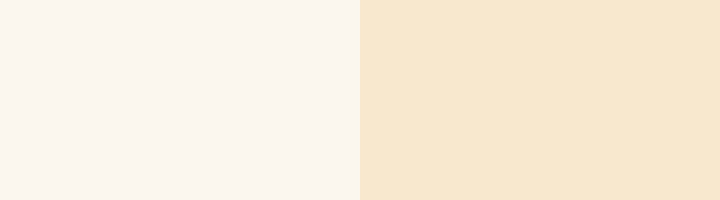
来自 Building
同上
来自 Fibery 官网 · 今日第二批 #19（截图取样近似色）
「19 的背景色我喜欢」
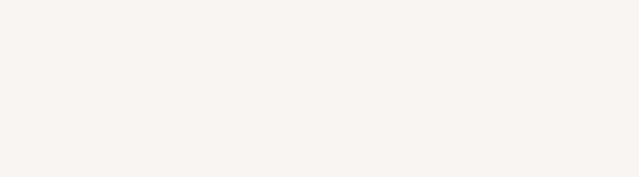
来自 Presensio 官网 · 今日第四批 #45（真实最外层截图取样）
「喜欢外层奶油纸感背景，不是粉橙内部渐变」
每个图案带当时戳中你的原图缩略。
来自 Causal Blog #09
「第9页它的那个矩形的那个形状我很喜欢」
来自 Causal Roadmap #10
「紫色、蓝色、黄色的那个长条形的那种那个形状……很喜欢」
来自 Causal 首页 About 段 #seg04
「纯白的底色上，不同的图片各种各样的形状去铺在这个图片上……很喜欢」
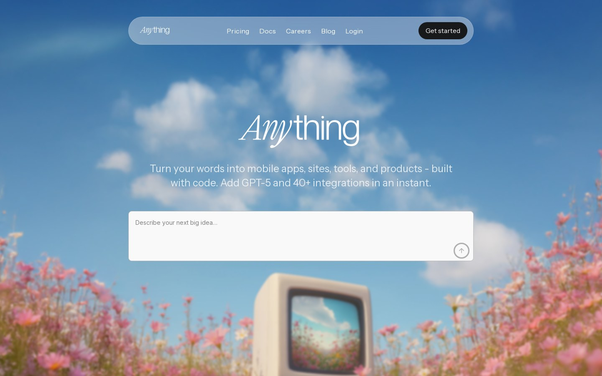
来自 Anything 官网 / 今日审美推送 #10 · createanything.com
「上方那栏 Tab 玻璃胶囊导航」
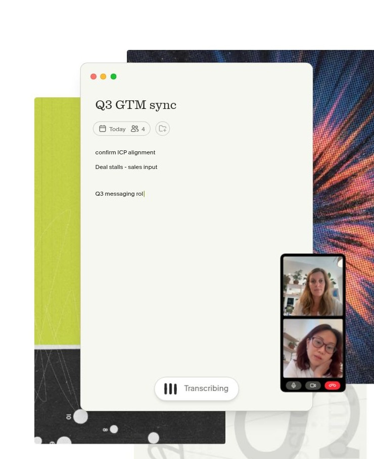
来自 Granola 官网 · 今日第二批 #22
「叠放的产品图这种设计 我喜欢」
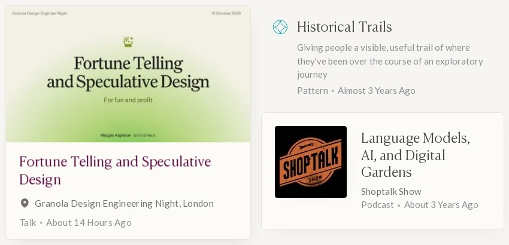
Talk 卡：近白底小圆角，极细浅灰描边加淡阴影，通栏横向封面，紫红衬线标题，下接地点行，底部是「Talk · 相对时间」小字。Podcast 卡：横向小圆角卡，左边黑底方形封面，右边衬线标题，下面是节目名和「Podcast · 相对时间」。Pattern 和 Note 条目没有底板、描边或阴影，直接融进页面：左边青蓝线性小图标，右边衬线标题，下接灰色摘要和元数据。元数据都是低对比无衬线小字，用中点分隔类型和时间，让标题优先。
来自 https://maggieappleton.com/garden · 2026-11-08
「03 的卡片我很喜欢」
设计手法带当时戳中你的原图缩略。
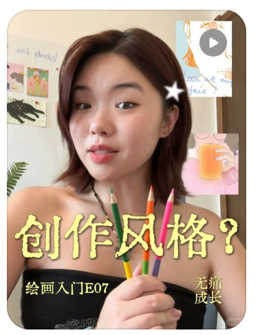
来自 小红书封面 c008「创作风格？」
喜欢主标题「创作风格？」——浅黄/奶油色、手写粗笔质感、带深色阴影描边，字在人物实拍背景上也站得住